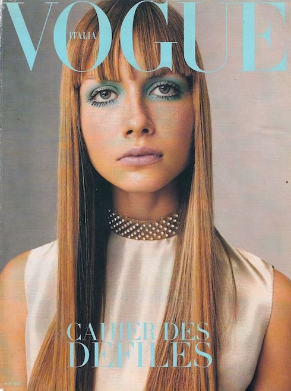
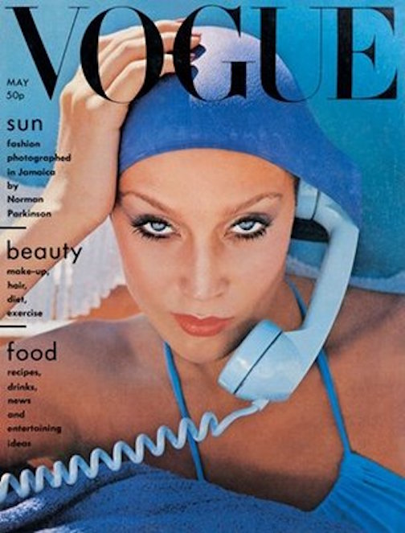
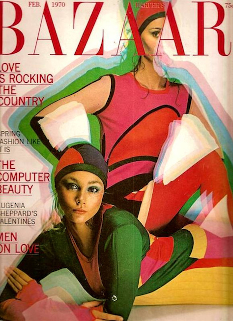
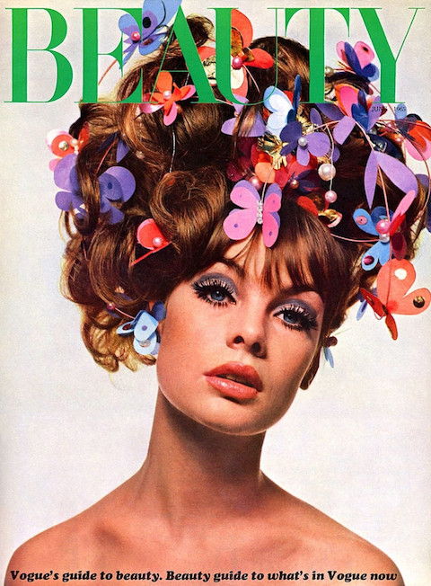
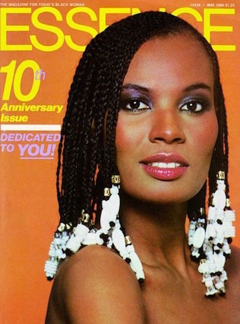
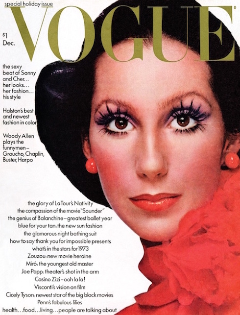

1970
1970 The "Me" Decade
Setting the precedence for change and modernity, the youth counterculture movements of the 1960s allowed for fashion trends to flourish in the 1970s. But unlike the in the 1960s, Americans in the 1970s took a step back from political movements, choosing instead to focus on themselves. Many have referred to this shift as a return to normalcy, giving the 1970s its nickname as the Me Decade.






HOME